V této kapitole dokonèíme hrubı design naší scény. Otevøete soubor "MyScene.scene" ve SceneEditu.
Podíváme-li se na naši scénu, �idle se ještì nechová tak, jak by mìla. Vypadá, jako by byla namalovaná na podlaze. Zkusme s tím nìco udìlat. Toté� u� jsme uèinili se stolem v kapitolách krok 2 a krok 3. Vytvoøili jsme entitu "stùl" a rozvrhli jsme regiony tak, �e stùl patøiènì pøekrıvá postavy, pokud se dostanou za nìj. Popsanı pøístup pomocí regionù je velice flexibilní a je vhodnı zejména pro veliké objekty a pro objekty s nepravidelnım pùdorysem. V pøípadì menších objektù je vhodnìjší pøevést je na nìco, èemu øíkáme "volné entity" (free entities). Uká�eme si to na pøíkladu �idle.
Tak�e co jsou "volné entity"? Døíve u� jsme pou�ívali normální entity; pozadí a stùl jsou entity, ale tyto entity jsou pevnì vázány na rozvr�ení scény. Volné entity se v mnohém chovají jako postavy, jsou vykreslovány v závislosti na tom, kde ve scénì jsou umístìny (jinımi slovy, ve kterém regionu stojí). Takhle to mù�e znít trochu zmatenì, ale hned si uká�eme, jak to funguje.
Dobøe, vytvoøme entitu "chair" (�idle). Nejprve potøebujeme prøipravit grafiku, tedy obrázek �idle. Toté� u� jsme dìlali s obrázkem pozadí a obrázkem stolu. Pøepnìte se do programu ProjectMan, pravım tlaèítkem myši kliknìte na slo�ce "MyScene" a vyberte pøíkaz "Import->Import file..." (Import->Import souboru). Nalistujte slo�ku "data\tutorial\gfx" a vyberte soubor "chair.bmp". Obrázek bude zkopírován do adresáøe s naší scénou.
Pøepnìte se zpátky do SceneEditu. Vlevo v seznamu vrstev zvolte polo�ku "Free entities" (Volné entity). Spodní seznam prvkù scény se zmìnil a nyní zobrazuje seznam všech volnıch entit (zatím je prázdnı). Kliknìte na tlaèítko "Add entity" (Pøidat entitu) a v menu vyberte polo�ku "Add sprite entity" (Pøidat sprite entitu). Bude vytvoøen objekt "new entity". Zmìòte jeho název na "chair" (�idle). Také mù�ete zmìnit vlatnost "Caption" (Titulek) na "�idle", titulek pou�ijeme pozdìji.
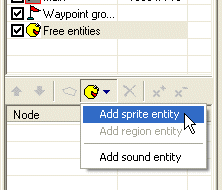
Nyní musíme nastavit obrázek, kterı reprezentuje naši novou netitu. Kliknìte na tlaèítko "..." vedle vlastnosti "Sprite" a najdìte soubor "chair.bmp", kterı jsme pøed chvílí naimportovali. Posuòte entitu tak, aby se pøesnì kryla s obrázkem �idle na pozadí:
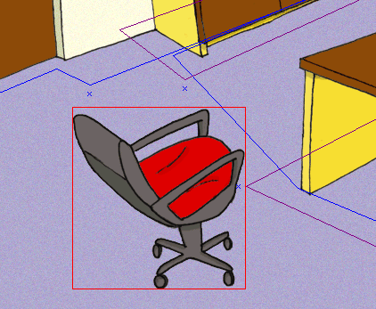
Ulo�te scénu a spus�te hru (v programu ProjectMan), abychom scénu vyzkoušeli. A jéje, nìco je špatnì, postava pøekrıvá �idli poøád. A co �e se dìje? Skuteènost je taková, �e stojí-li více volnıch objektù (postav a entit) ve stejném regionu, poøadí jejich vykreslení je dáno jejich Y souøadnicí na obrazovce. Pozice postavy je daná bodem, kde se její nohy dotıkají zemì, zatímco základní bod �idle je v levém horním bodu obrázku. Urèitì byste oèekávali, �e �idle by mìla mít základní bod také tam, kde se dotıká zemì, nemám pravdu? Ale jak toho dosáhnout? Namísto jednoduchého BMP obrázku pou�ijeme sprite. "Sprite" v pojetí WME je vlastnì slo�enı obrázek. Mù�e to bıt jednoduchı obrázek èi animace a navíc lze definovat nìkteré další vlastnosti (více informací o spritech). Jednou z techto dalších vlastností je i takzvanı bázovı bod (hot spot). Pøesnì to potøebujeme, abychm zmìnili bázovı bod naší �idle.
Tak�e nyní potøebujeme vytvoøit sprite pro �idli. Pøepnìte se do ProjectManu. Kliknìte pravım tlaèítkem myši na adresáøi "MyScene" a v menu vyberte pøíkaz "Add->Add sprite..." (Pøidat->Pøidat sprite). Objeví se okno s vıbìrem šablony. Zde vyberte polo�ku "Empty sprite" (Prázdnı sprite). Pøepište jméno na "chair" (�idle) a stisknìte OK.
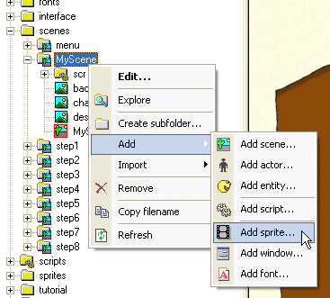
Novı sprite bude vytvoøen v adresáøi "MyScene" a bude se jmenovat "chair.sprite". Pou�ijte double-click na novì vytvoøeném souboru, èím� se sprite otevøe v editaèním programu SpriteEdit. Zatím je sprite prázdnı. Ve SpriteEditu mù�ete vytváøet animace, tím �e poskládáte nìkolik obrázku za sebe. Ale jeliko� naše �idle není animovaná, vystaèíme s jedním obrázkem. Kliknìte na tlaèítko "Add frame(s)" (Pøidat snímek/snímky) a potom najdìte a vyberte soubor "chair.bmp".
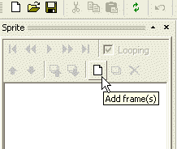
Nyní zmìníme onen bázovı bod (hot spot). Toho lze dosáhnout dvìma zpùsoby: buïto pøetáhnìte obrázek myší, nebo vyplòte pozici bázového bodu v oknì vlastností vlevo dole (bázovı bod je zobrazen jako malı èervenı køí�ek vpravo v oknì náhledu spritu).
Zmìòte pozici bázového bodu na 135, 174.
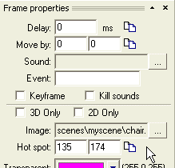
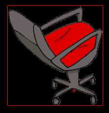
Ulo�te sprite a zavøete SpriteEdit. Pøepnìte se zpátky do SceneEditu. V oknì vlastností entity "chair" znovu kliknìte na tlaèítko "..." vedle vlastnosti "Sprite" a tentokrát vyberte soubor "char.sprite", kterı jsme právì vytvoøili. Všimnìte si, �e po vybrání souboru �idle poskoèila. To proto, jeliko� se zmìnil její bázovı bod. Znovu posuòte entitu �idle tak, aby pøesnì pøekrıvala obrázek �idle na pozadí. No a je to! Ulo�te scénu a spus�te hru.
Pøekrıvání teï u� funguje tak, jak by mìlo. Je-li postava za �idlí, je pøekryta a naopak.
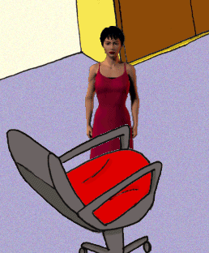 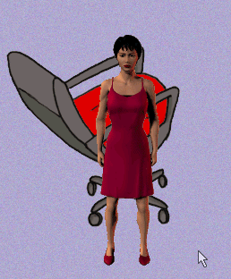
Teï u� jen musíme zaøídit, aby postava nemohla procházet skrz �idlo. Docílíme toho pøidáním blokovaného regionu a hrsti navigaèních bodù.
Pøidejte novı blokovanı region (pojmenovanı "block_chair") a ètyøi navigaèní body. Jak to udìlat jsme se nauèili v kapitolách krok 4 a krok 5. Mìli byste se dostat zhruba na vısledek, zobrazenı na následujícím obrázku:
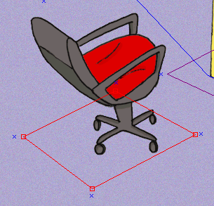
Rozvr�ení u� funguje dobøe, ale postava se zdá bıt trochu moc malá vùèi zbytku scény. Jak se postavy zvìtšují a zmenšují mù�eme snadno ovlivnit pomocí takzvanıch "úrovní zvìtšení" (scale levels). Úrovnì zvìtšení jsou reprezentovány tìmi vodorovnımi zelenımi èarami ve SceneEditu, kterıch jste si urèitì u� všimli. Myšlenka je následující: zadefinujete úroveò zvìtšení postavy v urèitıch klíèovıch bodech scény a herní engine pak automaticky dopoèítá správné zvìtšení podle aktuální Y pozice postavy.
V naší scénì u� jsou pøeddefinovány dvì úrovnì zvìtšení (a zøídka budete potøebovat více ne� dvì). Zelenımi èarami mù�ete pohybovat myší, pokud je chytnete za dr�átko vlevo. Odstranit úroveò zvìtšení a nastavit její vlastnosti mù�ete, pokud na dr�átku kliknete pravım tlaèítkem myši.
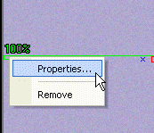
Pokud potøebujete do scény pøidat další úroveò zvìtšení, pou�ijte tlaèítko "Add scale level" (Pøidat úroveò zvìtšení).
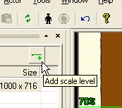
Ale dosti teorie, nastavme úrovnì zvìtšení v naší scénì. Posuòte horní zelenou èáru tak, aby se zhruba dotıkala horního bodu podlahy. Pøes pravé tlaèítko nastavte zvìtšení na 90%.
Potom posuòte spodní zelenou èáru k dolnímu okraji podlahy a nastavte zvìtšení na 160%.
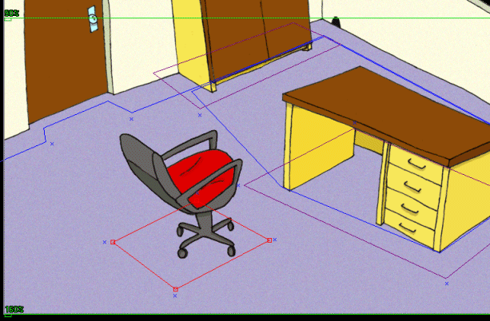
Mo�ná si øíkáte, jak odhadnout správné zvìtšení v tìchto dvou bodech. Inu, nejlepší zpùsob je pou�ít nástroj pro umístìní postavy. SceneEdit vám umo�òuje umístit do scény postavu, a tak okam�itì otestovat, jak funguje rozvr�ení scény a úrovnì zvìtšení. To znamená, �e vùbec nemusíte spouštìt hru, abyste otetovali vısledek vašeho sna�ení ve SceneEditu! Pøíkaz "Place actor" (Umístit postavu) naleznete na panelu nástrojù nebo nahoøe v hlavním menu jako "Actor->Place actor" (Postava->Umístit postavu).
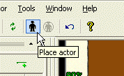
Stisknìte toto tlaèítko a SceneEdit vás nechá vyprat soubor s postavou. Nalistujte adresáø "data\actors\molly" a vyberte soubor "molly.actor". Jakmile bude postava nahrána do scény, pohybem myší mù�ete postavu umístit na jakékoliv místo. Stisknutím pravého tlaèítka myši lze nastavit, do jakého smìru je postava natoèena. Stisknutím levého tlaèítka myši se postava umístí do scény. Pokud potøebujete pozdìji zmìnit její pozici, prostì opìt stisknìte tlaèítko "Place actor" (Umístit postavu).
Poznámka: nástroj pro umístìní postavy slou�í pouze pro potøeby návrhu scény; vlastní scénu nijak neovlivòuje
Pokusnım umístìním postavy na rùzná místa scény mù�ete snadno vyladit to správné procento zvìtšení pro jednotlivé úrovnì zvìtšení.
Jeliko� je rozvr�ení scény u� hotové, pøidáme nìjakou tu ozdobu. Øeknìme �e chceme, aby se postava jevila trochu tmavší, pokud stojí v odlehlém koutì scény.
Mù�eme do scény pøidat speciální regiony, které ovlivòují barevnost a zvìtšení postav. Øíká se jim "dekoraèní regiony" (pamatujte, u� známe dva další typy regionù: regiony rozvr�ení a blokované regiony).
Dekoraèní regiony pøidáváme úplnì stejnì, jako ostatní typy: stisknutím tlaèítka "Add region" (Pøidat region). Ne� tlaèítko stisknete, ujistìte se, �e máte v seznamu vrstev vybránu polo�ku "main".
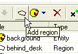
Stisknìte tlaèítko a do scény bude vlo�en novı region. Zmìòte jeho jméno na "shade" (stín) a poté pøepnìte rádové tlaèítko z polohy "Layout" (rozvr�ení) do polohy "Decoration" (dekoraèní). V oknì s vlastnostmi si nyní povšimnìte vıbìrového pole "Color" (barva). Jak jistì tušíte, pomocí nìj lze zvolit barvu daného regionu. Pokud do regionu vstoupí postava, její pùvodní barva bude zkombinována s barvou regionu. Zmìòte barvu na svìtle šedou.
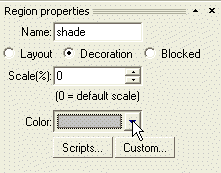
Poznámka: Také byste mohli zmìnit zvìtšení pro tento region (Scale). Tato volba pak pro danı region potlaèí vıchozí velikost, nastavenou pomocí úrovní zvìtšení (viz pøedchozí podkapitola).
Poznámka: obarvování postav funguje pouze pokud:
1) hra bì�í v akcelerovaném re�imu; v re�imu kompatibility je obarvování vypnuto
2) obarvovanı objekt musí mít vlastnost Colorable (obarvitelné) nastavenou na true (pravda)
Nyní pøesuòte region na správnou pozici a zmìòte jeho tvar tak jako na obrázku:
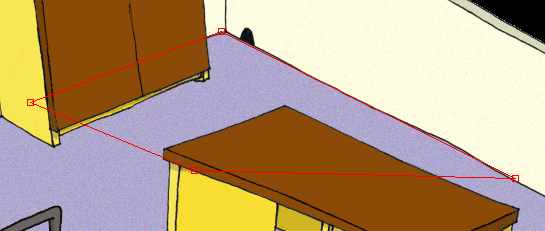
Poznámka: Dekoraèní regiony neovlivòují rozvr�ení scény. Nicménì obarvení postavy se øídí podle nejvrchnìjšího regionu, kterı postava najde, proto by dekoraèní regiony mìly bıt umístìny a� na konci seznamu prvkù ve SceneEditu.
Vısledky nastavení mù�ete otestovat pøímo ve SceneEditu pomocí nástroje pro umístìní postavy, kterı je popsán vıše.
Ulo�te scénu a ukonèete SceneEdit. Nyní mù�ete spustit hru a otestovat všechny zmìny, které jsme v této kapitole provedli. Postava by mìla mít správnou velikost, obcházet �idli, a pokud dojde do odlehlého rohu scény, tak lehce ztmavne.
Naše scéna u� teï dobøe vypadá, tak�e mù�eme pøidat nìjakou tu interaktivitu v kapitole Krok 7: Regionové entity, kurzory, skripty.